前言
看似最枯燥、最基础的东西往往具有最长久的生命力
网络协议
-
网络协议（Network Protocol），简称为协议，是为进行网络中的数据交换而建立的规则、标准或约定
-
Internet 中涉及两个或多个通信远程实体的所有活动都由协议管理，协议规范了网络中所有信息发送和接收过程
-
协议规定了通信实体之间所交换消息的格式、意义、顺序以及针对收到信息或发生的事件所采取的动作
A protocol defines the format and the order of messages exchanged between two or more communicating entities, as well as the actions taken on the transmission and/or receipt of a message or other event.
协议三要素
- 语法（Syntax）
- 数据与控制信息的结构或格式
- 信号电平
- 语义（Semantics）
- 需要发出何种控制信息
- 完成何种动作以及做出何种响应
- 时序（Timing）
- 事件顺序
- 速度匹配
网络分层
- OSI 概念模型
- OSI 与 TCP/IP 模型对照

-
网络分层的优点：
-
各层之间是独立的，某一层并不需要知道它下一层是如何实现的，而仅仅需要知道该层通过层间的接口所提供的服务
-
灵活性好，当任何一层发生变化时，只要层间接口关系保持不变，则在这层以上或以下各层均不受影响
传输层是 IPv4 或 IPv6，链路层是否仍使用1500字节的 MTU 对应用层没有影响
Intel DPDK 绕过了内核网络协议栈，提供了更好的网络性能，但一些调试工具也因此无法使用
-
结构上可分割开、易于实现和维护、能促进标准化工作
-
-
层与层的关系：只要是在网络上的包都是完整的，可以有下层没上层，但不可有上层没下层，无论这个包经过哪些设备，它都是完整的，所谓二层设备、三层设备，都是这些设备上跑的程序不同而已，一个 HTTP 协议的包经过一个二层设备，二层设备收进去的是整个网络包
架构设计
设计原则
关键架构属性
- 性能 Performance：影响高可用的关键因素
- 可伸缩性 Scalability：支持部署可以互相交互的大量组件
- 简单性 Simplicity：易理解、易实现、易验证
- 可见性 Visiable：对两个组件间的交互进行监视或者仲裁的能力。如缓存、分层设计等
- 可移植性 Portability：在不同的环境下运行的能力
- 可靠性 Reliability：出现部分故障时，对整体影响的程度
- 可修改性 Modifiability：对系统作出修改的难易程度，由可进化性、可定制性、可扩展性、可配置性、可重用性构成
架构属性：性能
-
网络性能
Network Performance-
Throughput吞吐量：小于等于带宽 bandwidth -
Overhead开销：首次开销，每次开销
-
-
用户感知到的性能
User-perceived Performance-
Latency延迟：发起请求到接收到响应的时间 -
Completion完成时间：完成一个应用动作所花费的时间
-
-
网络效率
Network Efficiency- 重用缓存、减少交互次数、数据传输距离更近、COD
架构属性：可修改性
-
可进化性 Evolvability：一个组件独立升级而不影响其他组件
-
可扩展性 Extensibility ：向系统添加功能，而不会影响到系统的其他部分
-
可定制性 Customizability ：临时性、定制性地更改某一要素来提供服务，不对常规客户产生影响
-
可配置性 Configurability ：应用部署后可通过修改配置提供新的功能
-
可重用性 Reusabilit ：组件可以不做修改在其他应用在使用
架构风格
数据流风格
-
数据流风格
Data-flow Styles -
优点：简单性、可进化性、可扩展性、可配置性、可重用性
-
管道与过滤器（Pipe And Filter，PF）

- 每个 Filter 都有输入端和输出端，只能从输入端读取数据，处理后再从输出端产生数据
-
统一接口的管道与过滤器（Uniform Pipe And Filter，UPF）
- 在 PF 上增加了统一接口的约束，所有 Filter 过滤器必须具备同样的接口
-
两种架构对架构属性的影响

-
例如：协议分层
复制风格
-
复制风格
Replication Styles -
优点：用户可察觉的性能、可伸缩性，网络效率、可靠性也可以提到提升
-
复制仓库（Replicated Repository, RR）
- 多个进程提供相同的服务，通过反向代理对外提供集中服务
- 例如：MySQL 冷热备份
-
缓存 $
- RR 的变体，通过复制请求的结果，为后续请求复用
-
两种架构对架构属性的影响

分层风格
-
分层风格
Hierarchical Styles -
优点：简单性、可进化性、可伸缩性
-
客户端服务器（Client-Server，CS）
- 由 Client 触发请求，Server 监听到请求后产生响应，Client 一直等待收到响应后，会话结束
- 分离关注点隐藏细节，良好的简单性、可伸缩性、可进化性
- 示例：客户端 - 服务器网络模型
-
分层系统（Layered System，LS）
- 每一层为其之上的层服务，并使用在其之下的层所提供的服务
- 例如 TCP/IP
-
分层客户端服务器（Layered Client-Server，LCS）
- LS+CS
- 例如正向代理和反向代理，从空间上分为外部层与内部层
-
无状态、客户端服务器（Client-Stateless-Server，CSS）
-
基于 CS，服务器上不允许有session state会话状态
-
提升了可见性、可伸缩性、可靠性，但重复数据导致降低网络性能
-
-
缓存、无状态、客户端服务器（Client-Cache-Stateless-Server，C$SS）
- 提升性能
-
分层、缓存、无状态、客户端服务器（Layered-Client-Cache-Stateless-Server，LC$SS）

-
远程会话（Remote Session，RS）
- CS 变体，服务器保存 Application state 应用状态
- 可伸缩性、可见性差
- 例如：FTP
-
远程数据访问（Remote Data Access，RDA）
-
CS 变体， Application state 应用状态同时分布在客户端与服务器
-
巨大的数据集有可能通过迭代而减少
-
简单性、可伸缩性差
-
例如：SQL 访问数据库
-
-
对架构属性的影响

移动代码风格
-
移动代码风格
Mobile Code Styles，执行的代码可移动 -
优点：可移植性、可扩展性、网络效率
-
虚拟机（Virtual Machine，VM）
- 分离指令与实现
-
远程求值（Remote Evaluation，REV）
- 基于 CS 的 VM，将代码发送至服务器执行
- 例如：JS
-
按需代码（Code on Demand，COD）
-
服务器在响应中发回处理代码，在客户端执行
-
优秀的可扩展性和可配置性，提升用户可察觉性能和网络效率
-
-
分层、按需代码、缓存、无状态、客户端服务器
（Layered-Code-on-Demand-Client-Cache-Stateless-Server，LCODC$SS）
- LC$SS+COD

-
移动代理（Mobile Agent，MA）
- 相当于 REV+COD
-
对架构属性的影响

点对点风格
-
点对点风格
Peer-to-Peer Styles -
优点：可进化性、可重用性、可扩展性、可配置性
-
Event-based Integration，EBI：
-
基于事件集成系统，如由类似 Kafka 这样的消息系统 + 分发订阅来消除耦合
-
优秀的可重用性、可扩展性、可进化性
-
缺乏可理解性，收到一条消息不知道是哪个订阅产生的
-
由于消息广播等因素造成的消息风暴，可伸缩性差
-
-
Chiron-2，C2
- 参见论文《A Component- and Message-Based Architectural Style for GUI Software》
- 相当于 EBI+LCS，控制了消息的方向
-
Distributed Objects，DO
- 组件结对交互
-
Brokered Distributed Objects，BDO
- 引入名字解析组件来简化 DO，例如 CORBA
-
对架构属性的影响

应用层
HTTP
HTTP 协议（Hypertext Transfer Protocol ）
a stateless application-level request/response protocol that uses extensible semantics and self-descriptive message payloads for flexible interaction with network-based hypertext information systems（RFC7230 2014.6）
一种无状态的、应用层的、以请求/应答方式运行的协议，它使用可扩展的语义和自描述消息格式，与基于网络的超文本信息系统灵活的互动
HTTP/1 的设计
HTTP 解决了什么问题？
Web’s major goal was to be a shared information space through which people and machines could communicate. ——Tim Berners Lee
-
Form Follows Function：HTTP 协议为什么是现在这个样子？
-
解决 WWW 信息交互必须面对的需求：
-
低门槛
-
可扩展性：巨大的用户群体，超长的寿命
-
分布式系统下的 Hypermedia：大粒度数据的网络传输
-
Internet 规模
- 无法控制的 scalability：不可预测的负载、非法格式的数据、恶意消息和客户端不能保持所有服务器信息、服务器不能保持多个请求间的状态信息
-
独立的组件部署：新老组件并存
-
向前兼容：自 1993 年起 HTTP0.9\1.0（1996）已经被广泛使用
-
REST 架构
-
Roy Thomas Fielding 在 2000 年发布指导 HTTP/1.1 规范制订的论文
- 《Architectural Style and the Design of Network-based Software Architectures》
- 即常说的 Representational State Transfer（REST）架构
-
风格演化

-
REST 架构下 Web

协议通用规则
消息格式

基于ABNF语义定义的HTTP消息格式：
HTTP-message = start-line *( header-field CRLF ) CRLF [ message-body ]
- start-line = request-line / status-line
- request-line = method SP request-target SP HTTP-version CRLF
- status-line = HTTP-version SP status-code SP reason-phrase CRLF
- header-field = field-name “:” OWS field-value OWS
-
OWS = *(SP / HTAB）
-
field-name = token
-
field-value = *(field-content /obs-fold）
-
- message-body = *OCTET
ABNF扩充巴科斯 - 瑙尔范式：定义语法的元语言
操作符
- 空白字符：用来分隔定义中的各个元素
- e.g.method SP request-target SP HTTP-version CRLF
- 选择 /：表示多个规则都是可供选择的规则
- e.g.start-line = request-line / status-line
- 值范围 %c##-##
- e.g.OCTAL = “0” / “1” / “2” / “3” / “4” / “5” / “6” / “7” 与 OCTAL = %x30-37 等价
- 序列组合 ()：将规则组合起来，视为单个元素
- 不定量重复 m*n
- e.g.*元素表示零个或更多元素： *( header-field CRLF )
- e.g.1* 元素表示一个或更多元素，2*4 元素表示两个至四个元素
- 可选序列 []：
- e.g.[ message-body ]
核心规则

-
报文示例


URI
什么是URI ？
-
URL：
Uniform Resource Locator，表示资源的位置， 期望提供查找资源的方法 （RFC1738 1994.12） -
URN：
Uniform Resource Name，期望为资源提供持久的、位置无关的标识方式，并允许简单地将多个命名空间映射到单个URN命名空间 （RFC2141 1997.5）- e.g. 磁力链接 magnet:?xt=urn:sha1:YNCKHTQC5C
-
URI：
Uniform Resource Identifier，用以区分资源，是 URL 和 URN 的超集，用以取代 URL 和 URN 概念 （RFC1630 1994.6）（RFC3986 2005.1 取代 RFC2396 和 RFC2732） -
Resource 资源
- 可以是图片、文档，也可以是不能通过互联网访问的实体，例如人、公司，也可以是抽象的概念，例如亲属关系或者数字符号
- 一个资源可以有多个 URI
-
Identifier 标识符
- 将当前资源与其他资源区分开的名称
-
Uniform 统一
- 允许不同种类的资源在同一上下文中出现
- 对不同种类的资源标识符可以使用同一种语义进行解读
- 引入新标识符时，不会对已有标识符产生影响
- 允许同一资源标识符在不同的、internet 规模下的上下文中出现
URI 组成：schema, user information, host, port, path, query, fragment

URI 的格式
URI = scheme “:” hier-part [ “?” query ] [ “#” fragment ]
-
scheme= ALPHA *( ALPHA / DIGIT / “+” / “-” / “.” )
e.g. http, https, ftp, mailto, rtsp, file, telnet -
query= *( pchar / “/” / “?” ) -
fragment= *( pchar / “/” / “?” ) -
hier-part= “//”authoritypath-abempty / path-absolute / path-rootless / path-empty-
authority = [ userinfo “@” ] host [ “:” port ]
userinfo = *( unreserved / pct-encoded / sub-delims / “:” )
host = IP-literal / IPv4address / reg-name
port = *DIGIT
-
path = path-abempty/ path-absolute/ path-noscheme / path-rootless / path-empty
path-abempty = *( “/” segment ) ：以/开头的路径或者空路径
path-absolute = “/” [ segment-nz *( “/” segment ) ] ：以/开头的路径，但不能以//开头
path-noscheme = segment-nz-nc *( “/” segment ) ：以非:号开头的路径
path-rootless = segment-nz *( “/” segment ) ：相对path-noscheme，增加允许以:号开头的路径
path-empty = 0<pchar> ：空路径
-
相对URI
URI-reference = URI/relative-ref
relative-ref= relative-part [ “?” query ] [ “#” fragment ]- relative-part = “//” authority path-abempty / path-absolute / path-noscheme / path-empty
URI 编码
方法
常见方法（RFC7231）
-
GET：主要的获取信息方法，大量的性能优化都针对该方法，幂等方法
-
HEAD：类似 GET 方法，但服务器不发送 BODY，用以获取 HEAD 元数据，幂等方法
-
POST：常用于提交 HTML FORM 表单、新增资源等
-
PUT：更新资源，带条件时是幂等方法
-
DELETE：删除资源，幂等方法
-
CONNECT：建立 tunnel 隧道
-
OPTIONS：显示服务器对访问资源支持的方法，幂等方法
-
TRACE：回显服务器收到的请求，用于定位问题。有安全风险
用于文档管理的 WEBDAV 方法（RFC2518）
-
PROPFIND：从 Web 资源中检索以 XML 格式存储的属性。它也被重载，以允许一个检索远程系统的集合结构（也叫目录层次结构）
-
PROPPATCH：在单个原子性动作中更改和删除资源的多个属性
-
MKCOL：创建集合或者目录
-
COPY：将资源从一个 URI 复制到另一个 URI
-
MOVE：将资源从一个 URI 移动到另一个 URI
-
LOCK：锁定一个资源。WebDAV 支持共享锁和互斥锁。
-
UNLOCK：解除资源的锁定
响应行
status-line = HTTP-version SP status-code SP reason-phrase CRLF
-
status-code= 3DIGIT -
reason-phrase= *( HTAB / SP / VCHAR / obs-text )
响应码
- 响应码规范：（RFC6585 2012.4）（RFC7231 2014.6）
1xx：信息性状态码，请求已接收到，需要进一步处理才能完成，HTTP1.0 不支持
-
100 Continue：上传大文件前使用
- 由客户端发起请求中携带 Expect: 100-continue 头部触发
-
101 Switch Protocols：协议升级使用
- 由客户端发起请求中携带 Upgrade: 头部触发，如升级 websocket 或者 http/2.0
-
102 Processing：WebDAV 请求可能包含许多涉及文件操作的子请求，需要很长时间才能完成请求。该代码表示服务器已经收到并正在处理请求，但无响应可用。这样可以防止客户端超时，并假设请求丢失
2xx：成功处理请求
-
200 OK: 成功返回响应。
-
201 Created: 有新资源在服务器端被成功创建。
-
202 Accepted: 服务器接收并开始处理请求，但请求未处理完成。这样一个模糊的概念是有意如此设计，可以覆盖更多的场景。例如异步、需要长时间处理的任务。
-
203 Non-Authoritative Information：当代理服务器修改了 origin server 的原始响应包体时（例如更换了HTML中的元素值），代理服务器可以通过修改200为203的方式告知客户端这一事实，方便客户端为这一行为作出相应的处理。 203响应可以被缓存。
-
204 No Content：成功执行了请求且不携带响应包体，并暗示客户端无需更新当前的页面视图。
-
205 Reset Content：成功执行了请求且不携带响应包体，同时指明客户端需要更新当前页面视图。
-
206 Partial Content：使用 range 协议时返回部分响应内容时的响应码
-
207 Multi-Status：RFC4918 ，在 WEBDAV 协议中以 XML 返回多个资源的状态。
-
208 Already Reported：RFC5842 ，为避免相同集合下资源在207响应码下重复上报，使用 208 可以使用父集合的响应码。
3xx：重定向使用 Location 指向的资源或者缓存中的资源。在 RFC2068 中规定客户端重定向次数不应超过 5 次，以防止死循环。
-
300 Multiple Choices：资源有多种表述，通过 300 返回给客户端后由其自行选择访问哪一种表述。由于缺乏明确的细节，300 很少使用。
-
301 Moved Permanently：资源永久性的重定向到另一个 URI 中。
-
302 Found：资源临时的重定向到另一个 URI 中。
-
303 See Other：重定向到其他资源，常用于 POST/PUT 等方法的响应中。
-
304 Not Modified：当客户端拥有可能过期的缓存时，会携带缓存的标识 etag、时间等信息询问服务器缓存是否仍可复用，而304是告诉客户端可以复用缓存。
-
307 Temporary Redirect：类似302，但明确重定向后请求方法必须与原请求方法相同，不得改变。
-
308 Permanent Redirect：类似301，但明确重定向后请求方法必须与原请求方法相同，不得改变。
4xx：客户端出现错误，服务器无法处理请求
-
400 Bad Request：服务器认为客户端出现了错误，但不能明确判断为以下哪种错误时使用此错误码。例如HTTP请求格式错误。
-
401 Unauthorized：用户认证信息缺失或者不正确，导致服务器无法处理请求。
-
407 Proxy Authentication Required：对需要经由代理的请求，认证信息未通过代理服务器的验证
-
403 Forbidden：服务器理解请求的含义，但没有权限执行此请求
-
404 Not Found：服务器没有找到对应的资源
-
410 Gone：服务器没有找到对应的资源，且明确的知道该位置永久性找不到该资源响应码分类： 4xx（二）
-
405 Method Not Allowed：服务器不支持请求行中的 method 方法
-
406 Not Acceptable：对客户端指定的资源表述不存在（例如对语言或者编码有要求），服务器返回表述列表供客户端选择。
-
408 Request Timeout：服务器接收请求超时
-
409 Conflict：资源冲突，例如上传文件时目标位置已经存在版本更新的资源
-
411 Length Required：如果请求含有包体且未携带 Content-Length 头部，且不属于chunk类请求时，返回 411响应码分类： 4xx（三）
-
412 Precondition Failed：复用缓存时传递的 If-Unmodified-Since 或 If-None-Match 头部不被满足
-
413 Payload Too Large/Request Entity Too Large：请求的包体超出服务器能处理的最大长度
-
414 URI Too Long：请求的 URI 超出服务器能接受的最大长度
-
415 Unsupported Media Type：上传的文件类型不被服务器支持
-
416 Range Not Satisfiable：无法提供 Range 请求中指定的那段包体
-
417 Expectation Failed：对于 Expect 请求头部期待的情况无法满足时的
-
421 Misdirected Request：服务器认为这个请求不该发给它，因为它没有能力处理。
-
426 Upgrade Required：服务器拒绝基于当前 HTTP 协议提供服务，通过Upgrade 头部告知客户端必须升级协议才能继续处理。
-
428 Precondition Required：用户请求中缺失了条件类头部，例如 If-Match
-
429 Too Many Requests：客户端发送请求的速率过快
-
431 Request Header Fields Too Large：请求的 HEADER 头部大小超过限制
-
451 Unavailable For Legal Reasons：RFC7725 ，由于法律原因资源不可访问响应码分类： 5xx（一）
5xx：服务器端出现错误，服务器处理请求出错
-
500 Internal Server Error：服务器内部错误，且不属于以下错误类型
-
501 Not Implemented：服务器不支持实现请求所需要的功能
-
502 Bad Gateway：代理服务器无法获取到合法响应
-
503 Service Unavailable：服务器资源尚未准备好处理当前请求
-
504 Gateway Timeout：代理服务器无法及时的从上游获得响应
-
505 HTTP Version Not Supported：请求使用的 HTTP 协议版本不支持
-
507 Insufficient Storage：服务器没有足够的空间处理请求
-
508 Loop Detected：访问资源时检测到循环
-
511 Network Authentication Required：代理服务器发现客户端需要进行身份验证才能获得网络访问权限
首部字段
首部字段名：字段值
单个HTTP首部字段可以有多个值
请求首部字段


响应首部字段


通用首部字段 General Header Fields
请求和响应报文两方都会使用的首部字段
| 首部字段名 | 说明 |
|---|---|
| Cache-Control | 控制缓存 |
| Connection | 连接管理、逐条首部 |
| Upgrade | 升级为其他协议 |
| via | 代理服务器的相关信息 |
| Wraning | 错误和警告通知 |
| Transfor-Encoding | 报文主体的传输编码格式 |
| Trailer | 报文末端的首部一览 |
| Pragma | 报文指令 |
| Date | 创建报文的日期 |


实体首部字段
| 首部字段名 | 说明 |
|---|---|
| Allow | 资源可支持的HTTP方法 |
| Content-Language | 实体的资源语言 |
| Content-Encoding | 实体的编码格式 |
| Content-Length | 实体的大小（字节） |
| Content-Type | 实体媒体类型 |
| Content-MD5 | 实体报文的摘要 |
| Content-Location | 代替资源的URI |
| Content-Rnages | 实体主体的位置范围 |
| Last-Modified | 资源最后的修改时间 |
| Expires | 实体主体的过期时间 |


连接与消息的路由
内容协商与传输
每个 URI 指向的资源可以是任何事物，可以有多种不同的表述，例如一份文档可以有不同语言的翻译、不同的媒体格式、可以针对不同的浏览器提供不同的压缩编码等。
Cookie 的设计与问题
缓存的控制
WebSocket
支持服务器推送消息
WebSocket是基于TCP的应用层协议，用于在C/S架构的应用中实现双向通信。RFC6455（2011.12）
• 双向通讯的优劣？
• 如何管理会话？
• 如何维持长连接？
• 兼容 HTTP 协议
• 端口复用
• 支持扩展
• 如 permessage-deflate 扩展
建立会话
• 消息传输
• 心跳
• 关闭会话
HTTP/2.0
TLS/SSL
应用层的安全基础设施
传输层
TCP
概述

建立连接
传输数据
拥塞控制
关闭连接
UDP
网络层
IP 协议
IP 地址是一个网卡在网络世界的通讯地址，相当于我们现实世界的门牌号码。IP 是地址，有定位功能，MAC 是身份证，无定位功能。
IP地址
查看 IP 地址
Windows： ipconfig
Linux： ifconfig、 ip addr
大多数时候这两个命令系统自带。如果登录进入一个被裁剪过的非常小的 Linux 系统中，既没有 ifconfig 命令，也没有 ip addr 命令，可以自行安装 net-tools 和 iproute2 两个工具
net-tools起源于BSD，自2001年起，Linux社区已经对其停止维护，而iproute2旨在取代net-tools，并提供了一些新功能。一些Linux发行版已经停止支持net-tools，只支持iproute2。
net-tools通过procfs(/proc)和ioctl系统调用去访问和改变内核网络配置，而iproute2则通过netlink套接字接口与内核通讯。
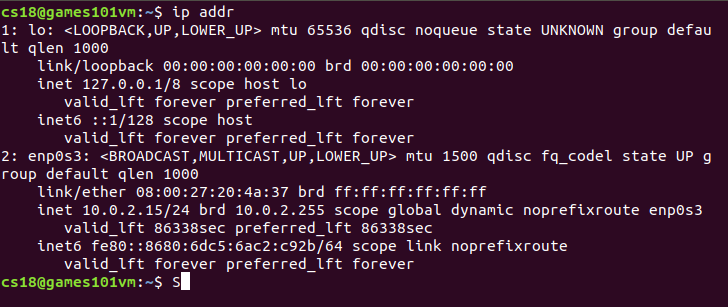
lo 全称是 loopback ，又称环回接口，往往会被分配到 127.0.0.1 这个地址。这个地址用于本机通信，经过内核处理后直接返回，不会在任何网络中出现。
10.0.2.15 就是一个 IP 地址。这个地址被 . 分隔为四个部分，每个部分 8 个 bit，总共 32 位。这样产生的 IP 地址的数量很快就不够用了，于是就有了 IPv6，也就是上面输出结果里面 fe80::8680:6dc5:6ac2:c92b/64 ，有 128 位。
scope在 IP 地址的后面， global说明这张网卡是可以对外的，可以接收来自各个地方的包。 host 说明这张网卡仅仅可以供本机相互通信。
link/ether fa:16:3e:c7:79:75 brd ff:ff:ff:ff:ff:ff 被称为MAC 地址Media Access Control，是一个网卡的物理地址，用十六进制，6 个 byte 表示。MAC 地址的通信范围比较小，局限在一个子网里面。
<BROADCAST,MULTICAST,UP,LOWER_UP> 叫作网络设备的状态标识 net_device flags
UP表示网卡处于启动的状态BROADCAST表示这个网卡有广播地址，可以发送广播MULTICAST表示网卡可以发送多播包LOWER_UP表示 L1 是启动的，即插着网线MTU1500指最大传输单元MTU为 1500，表示的是链路层包的大小，这是以太网的默认值，规定连 MAC 头带正文合起来，不允许超过 1500 个字节。如果放不下就需要分片来传输。
qdisc 是排队规则queueing discipline。内核如果需要通过某个网络接口发送数据包，它都需要按照为这个接口配置的排队规则把数据包加入队列。
-
pfifo是最简单的规则，它不对进入的数据包做任何的处理，数据包采用先入先出的方式通过队列 -
pfifo_fast稍微复杂一些，它的队列包括三个波段band。在每个波段里面，使用先进先出规则。三个波段的优先级也不相同。band 0的优先级最高，band 2的最低。如果band 0里面有数据包，系统就不会处理band 1里面的数据包。
数据包是按照服务类型 Type of Service （TOS）被分配到三个波段里的。TOS 是 IP 头里面的一个字段，代表了当前的包是高优先级的，还是低优先级的
配置 IP 地址
net-tools：
$ sudo ifconfig eth1 10.0.0.1/24
$ sudo ifconfig eth1 upiproute2：
$ sudo ip addr add 10.0.0.1/24 dev eth1
$ sudo ip link set up eth1
Linux 首先会判断要去的地址是一个网段的吗，或者和一个网卡是同一网段的吗？只有是一个网段的，它才会发送 ARP 请求，获取 MAC 地址。如果发现不是，**Linux 默认的逻辑是，如果这是一个跨网段的调用，便不会直接将包发送到网络上，而是企图将包发送到网关。**如果配置了网关，Linux 会获取网关的 MAC 地址，然后将包发出去。（网关要和当前的网络至少一个网卡是同一个网段的）
IP 地址分类
32 位的 IP 地址被分成了 5 类
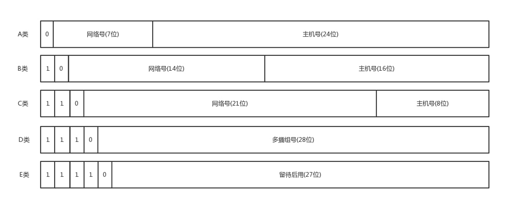
在网络地址中，对于 A、B、 C 类主要分两部分，前面一部分是网络号，后面一部分是主机号。
下面这个表格展示了 A、B、C 三类地址能包含的主机数量
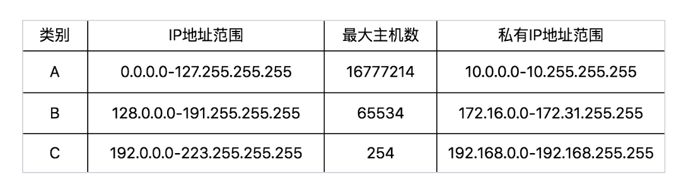
问题： C 类地址能包含的最大主机数量实在太少了，只有 254 个，而 B 类地址能包含的最大主机数量又太多了，6 万多台机器放在一个网络下面，一般的企业基本达不到这个规模，闲着的地址就是浪费。
一个折中的方式叫作无类型域间选路
公有/私有 IP 地址
上面的表格最右列是私有 IP 地址段。平时看到的数据中心里，办公室、家里或学校的 IP 地址，一般都是私有 IP 地址段。因为这些地址允许组织内部的 IT 人员自己管理、自己分配，而且可以重复。但是出了内网就需要使用公有 IP 地址。
表格中的 192.168.0.x 是最常用的私有 IP 地址。家里有 Wi-Fi，对应就会有一个 IP 地址。一般家中上网设备不会超过 256 个，所以 /24 基本就够了。 192.168.0 是网络号，后面是主机号。而整个网络里面的第一个地址 192.168.0.1 往往就是私有网络的出口地址。例如家里的电脑连接 Wi-Fi，Wi-Fi 路由器的地址就是 192.168.0.1，而 192.168.0.255 就是广播地址。一旦发送这个地址，整个 192.168.0 网络里面的所有机器都能收到。
无类型域间选路 CIDR
CIDR打破了原来设计的几类地址的做法，将 32 位的 IP 地址一分为二，前面是网络号，后面是主机号。如 IP地址 10.100.122.2/24，这种地址表示形式就是 CIDR。 24 的意思是：32 位中前 24 位是网络号，后 8 位是主机号。
伴随 CIDR 存在的，一个是广播地址，如果发送地址10.100.122.255，所有 10.100.122 网络里面的机器都可以收到。另一个是子网掩码，**将子网掩码和 IP 地址按位计算 AND，就可得到网络号。**将子网掩码 255.255.255.0 和 IP 地址进行 AND 计算为 10.100.122.0
动态主机配置协议 DHCP
客户端的机器每次使用都要配置 IP 地址怎么办？因此需要有一个自动配置的协议。
动态主机配置协议（Dynamic Host Configuration Protocol，DHCP）主要是用来给客户租用 IP 地址，网络管理员只需要配置一段共享的 IP 地址。每一台新接入的机器都通过 DHCP 协议，来这个共享的 IP 地址里申请，然后自动配置好，用完了还回去。DHCP 协议能给客户推荐PXE帮助安装操作系统，在云计算领域大有用处。
ICMP
ICMP全称是 Internet Control Message Protocol ，就是互联网控制报文协议。是一种基于 IP 协议的控制协议。网络包在异常复杂的网络环境中传输时，常常会遇到各种各样的问题。当遇到问题的时候，要传出消息来报告情况，调整传输策略。
ICMP 报文封装在 IP 包里面。因为传输指令的时候需要源地址和目标地址。
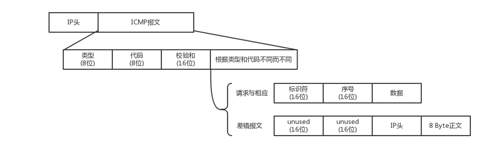
ICMP 在 IP 报文后加入了新的内容，这些内容包括：
- 类型：ICMP 报文有很多的类型，不同的类型有不同的代码，其中 ping 的请求类型为 8（主动请求），应答为 0
- 代码：进一步划分 ICMP 的类型, 用来查找产生错误的原因
- 校验和：用于检查错误的数据
查询报文类型
例如，ping 就是查询报文，是一种主动请求，并且获得主动应答的 ICMP 协议。
对 ping 的主动请求进行网络抓包，称为ICMP ECHO REQUEST。同理主动请求的回复称为ICMP ECHO REPLY。比起原生的 ICMP，这里面多了两个字段：标识符、顺序号。顺序号主要用于区分连续 ping 的时候发出的多个数据包。每发出一个请求数据包，顺序号会自动加 1。为了能够计算往返时间 RTT，它会在报文的数据部分插入发送时间。
在选项数据中，ping 还会在报文的数据部分插入发送时间，来计算往返时间，说明路程的长短。
差错报文类型
异常情况发起的，来报告发生了不好的事情，对应 ICMP 的差错报文类型。终点不可达为 3，源抑制为 4，超时为 11，重定向为 5。
-
源站抑制，也就是让源站放慢发送速度。
-
时间超时，也就是超过网络包的生存时间还是没到。
-
路由重定向，也就是让下次发给另一个路由器。
差错报文的结构前面还是 IP，ICMP 的前 8 字节不变，后面则跟上出错的那个 IP 包的 IP 头和 IP 正文的前 8 个字节。
ping：查询报文类型的使用
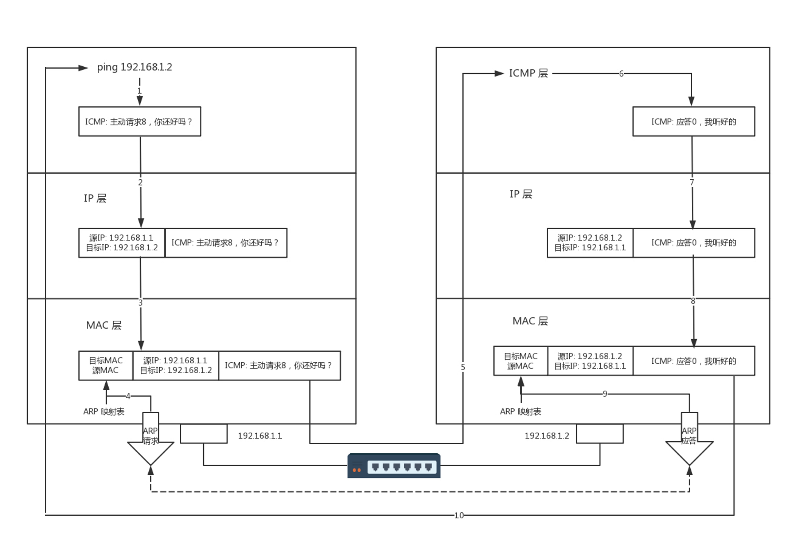
ping 命令执行的时候，源主机首先会构建一个 ICMP 请求数据包，ICMP 数据包内包含多个字段。然后，由 ICMP 协议将这个数据包连同地址 192.168.1.2 一起交给 IP 层构建一个 IP 数据包。
IP 报文通过 ARP 协议，源地址和目的地址被翻译成 MAC 地址，由数据链路层构建一个数据帧后（目的地址是 IP 层传过来的 MAC 地址，源地址则是本机的 MAC 地址），依据以太网的介质访问规则，报文被传输出去。
当报文到达目的地址之后，目的地址所在的主机也按照 ICMP 协议进行应答。主机 B 会构建一个 ICMP 应答包，应答数据包的类型字段为 0，顺序号为接收到的请求数据包中的顺序号，然后再发送出去给主机 A。
应答数据到达源地址之后，ping 命令可以通过再次解析 ICMP 报文，对比序列号，计算时间戳等来完成每个发送 - 应答的显示。
如果跨网段的话，还会涉及网关的转发、路由器的转发等等。但是对于 ICMP 的头来讲是没什么影响的。
如果在自己的可控范围之内，遇到网络不通时，除了直接 ping 目标的 IP 地址之外，应该要清楚地知道一个网络包从源地址到目标地址都经过了哪些设备，然后逐个 ping 中间的这些设备。如果可能的话，在关键点通过 tcpdump 查看包有没有到达某个点，回复的包到达了哪个点。
如果不在我们的控制范围内，很多中间设备都是禁止 ping 的。这个时候就要使用 telnet，或其他协议来测试网络是否通。
Traceroute：差错报文类型的使用
Traceroute会使用 ICMP 的规则，故意制造一些能够产生错误的场景。
-
故意设置特殊的 TTL ，来追踪去往目的地时沿途经过的路由器。发送一份TTL字段为1的 UDP 数据包给目的主机，处理这个数据包的第一个路由器将TTL值减1，然后丢弃该数据包，并给源主机发送一个ICMP报文（时间超时，这个报文包含了路由器的IP地址，这样就得到了第一个路由器的地址），然后发送一个TTL为2的数据报来得到第二个路由器的IP地址，继续这个过程，直至这个数据报到达目的主机。（有的路由器不会回 ICMP，这也是 Traceroute 一个公网的地址看不到中间路由的原因）
怎么知道 UDP 到达了目的主机？
发送一份 UDP 数据报给目的主机，但选择一个大于 30000的值作为 UDP 端口号。当该数据报到达时，将使目的主机的 UDP 模块产生一份端口不可达错误 ICMP 报文。如果数据报没有到达，则可能是超时。
-
故意设置不分片，从而确定路径的 MTU。首先发送分组，并设置“不分片”标志。发送的第一个分组的长度正好与出口 MTU 相等。如果中间遇到窄的关口会被卡住，会发送 ICMP 网络差错包，类型为需要进行分片但设置了不分片位。每次收到 ICMP不能分片差错时就减小分组的长度，直到到达目标主机。
当发送的报文出问题的时候，会发送一个 ICMP 的差错报文来报告错误，但是如果 ICMP 的差错报文也出问题了呢？
路由协议
ARP
RARP
链路层
几台电脑可以通过集线器连接成一个小的局域网。集线器完全在物理层工作，它会将自己收到的每一个字节，都复制到其他端口上去。
如果每一台电脑发出的包，每个电脑都能收到，这需要解决几个问题：
- 这个包是发给谁的？谁应该接收？
- 会不会产生混乱？有没有先后规则？
- 如果发送的时候出现了错误怎么办？
MAC层要控制在往媒体上发数据时的先后问题，防止发生混乱，解决了媒体接入控制的问题。这个问题中的规则叫多路访问。有很多算法可以解决这个问题，比如信道划分、轮流协议、随机接入协议。
解决第一个问题要用到一个物理地址，叫作链路层地址。但是因为第二层主要解决媒体接入控制的问题，所以它常被称为MAC 地址。
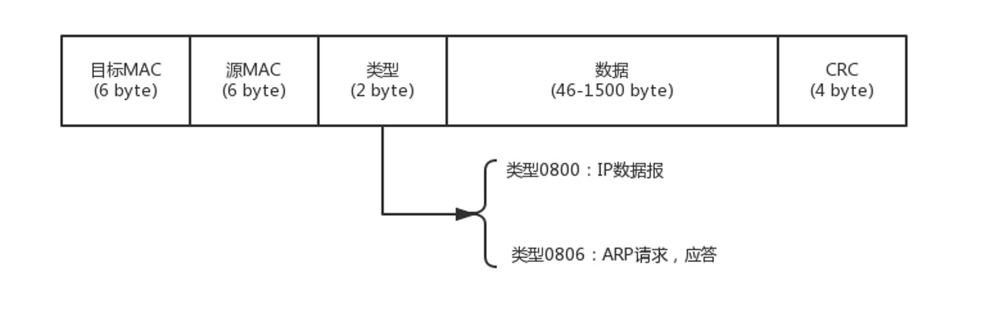
有了目标 MAC 地址，数据包在链路上广播，MAC 的网卡才能发现这个包是给它的。返回的时候，源 MAC 就变成了目标 MAC，再返给请求的机器。
对于以太网，第二层的最后面是CRC，也就是循环冗余检测。通过 XOR 异或的算法，来计算整个包是否在发送的过程中出现了错误，主要解决第三个问题。
如果源机器不知道目标机器的地址，就会用到ARP 协议
ARP
已知 IP 地址，求 MAC 地址的协议
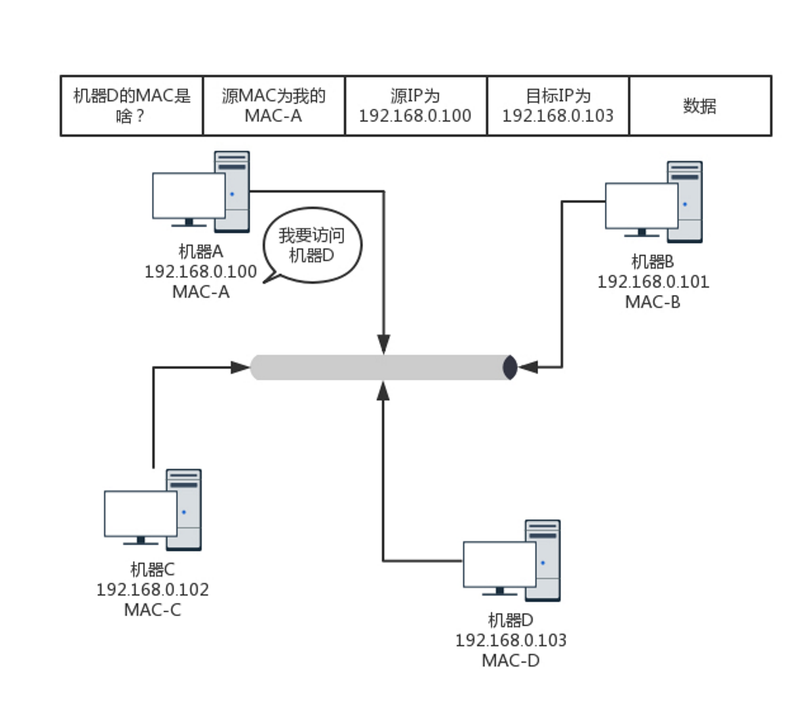
在一个局域网里面，当知道了 IP 地址，不知道 MAC 怎么办呢？靠广播
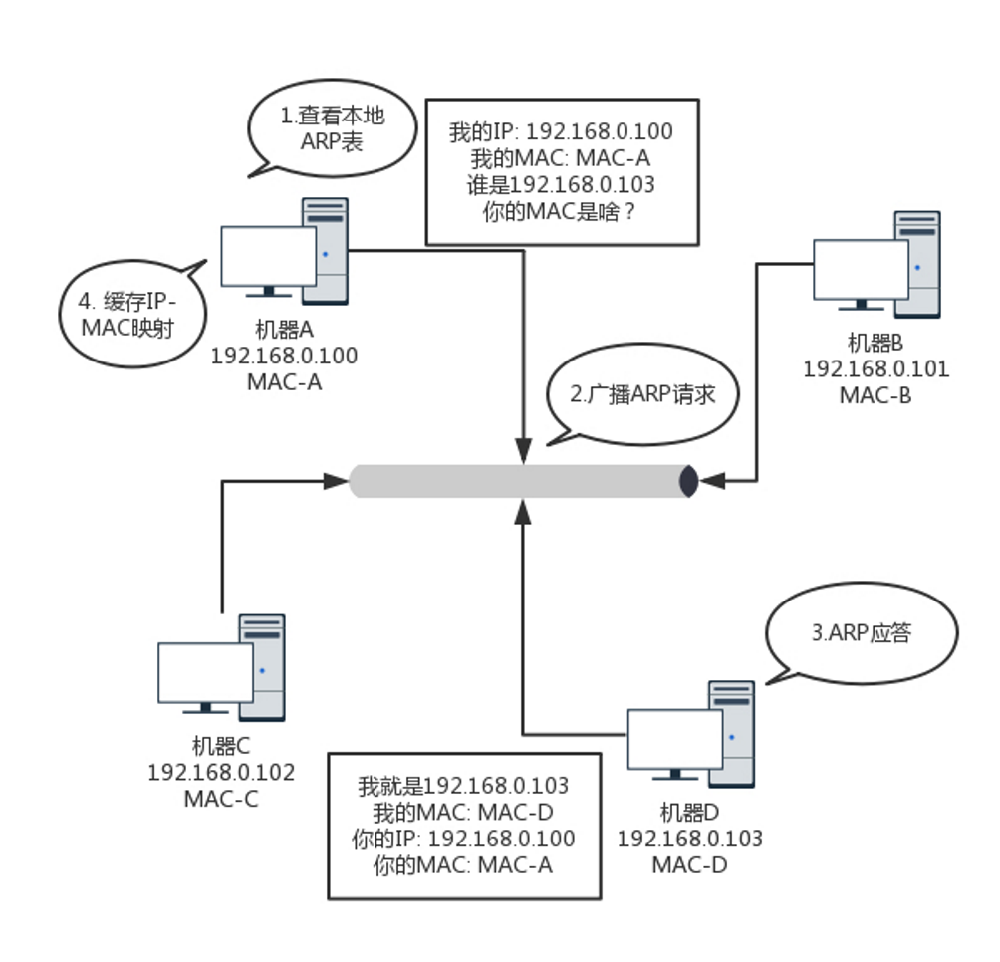
广而告之，发送一个广播包，谁是这个 IP 谁来回答。具体询问和回答的报文就像下面这样：
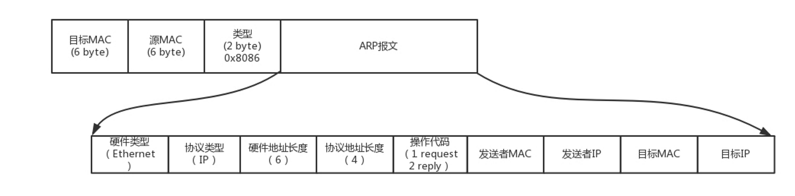
为了避免每次都用 ARP 请求，机器本地也会进行 ARP 缓存。机器会不断地上线下线，IP 也可能会变，所以 ARP 的 MAC 地址缓存过一段时间会过期。
RARP 协议：已知 MAC 求 IP
无盘工作站无法持久化IP地址到本地，但有网卡，所以可以用RARP协议来获取IP地址
RARP可以用于局域网管理员想指定机器IP，又不想每台机器去设置静态IP的情况，可以在RARP服务器上配置MAC和IP对应的ARP表
交换机
检查目标 MAC 地址，然后根据策略转发的设备。
一台 MAC1 电脑将一个包发送给另一台 MAC2 电脑，当这个包到达交换机的时候，一开始交换机也不知道 MAC2 的电脑在哪个口，它只能将包转发给除了来的那个口之外的其他所有的口。但是，这时交换机会记住，MAC1 是来自一个明确的口。
过了一段时间之后，就有了整个网络的一个结构了，这个时候，基本上不用广播了，全部可以准确转发。每个机器的 IP 地址会变，所在的口也会变，因而交换机上的学习的结果，称为转发表，是有一个过期时间的。
拓扑结构
在复杂的场景下如办公室，一个交换机不够用，需要多台交换机，交换机之间连接起来，这就形成一个拓扑结构
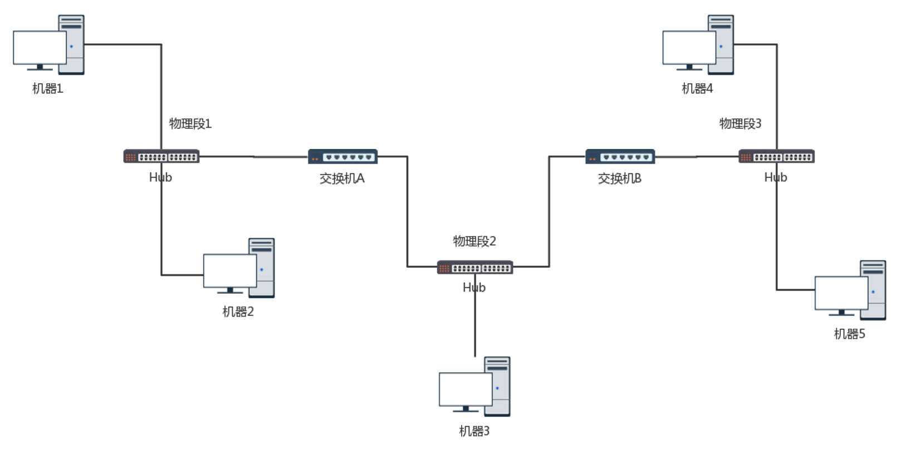
上图中两台交换机连接三个局域网，每个局域网上有多台机器
如果机器 1 只知道机器 4 的 IP 地址，当它想要访问机器 4 把包发出去的时候，必须要知道机器 4 的 MAC 地址，于是机器 1 发起广播。交换机 A 一开始不知道任何拓扑信息，在收到广播后采取的策略是：**除了广播包来的方向外，它还要转发给其他所有的网口。**交换机 B 同理，将包转发到 LAN3 。机器 4 收到了广播信息，主动响应 MAC 地址，一个 ARP 请求完成。
交换机了解到拓扑信息后，情况就好转起来。
当机器 3 要访问机器 1 时也需要发起一个广播的 ARP 请求。交换机 A 和 B 都能够收到这个请求。交换机 A 知道主机 1 是在左边网口，所以会把广播消息转发到 LAN1 。交换机 B 则不会将消息广播到 LAN3 。
当交换机的数目越来越多时，交换机之间为了冗余、带宽提升、或错误连接难免会产生一个封闭的物理环路，遭遇环路问题，产生广播风暴（网络包迷路，一个包转来转去，每台机器都会发广播包，交换机转发也会复制广播包，当广播包越来越多的时候，路会越来越堵）这就需要使用 STP 协议，将有环路的图变成没有环路的树。将物理上存在环路的网络，通过算法在逻辑上阻塞一些端口。
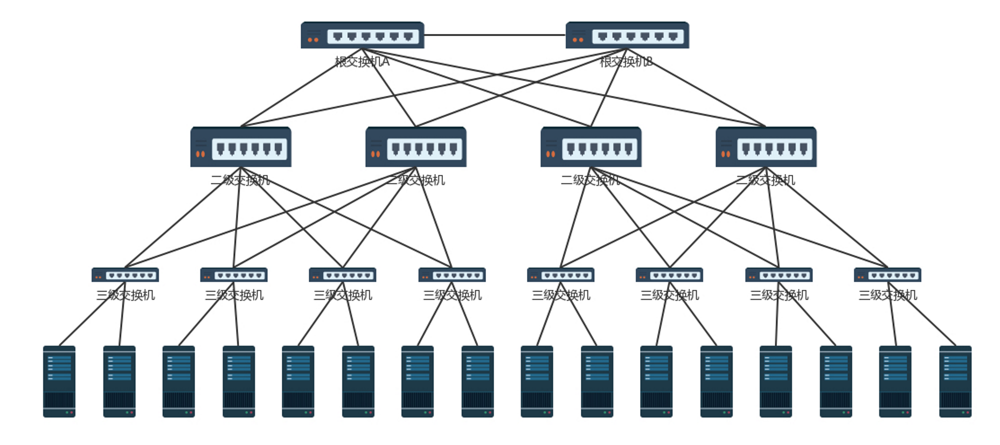
STP缺点：一个是某个交换机状态发生变化的时候，整个树需要重新构建；被破开的环的链路被浪费了
VLAN
交换机数目多会面临隔离问题，可以通过 VLAN 形成虚拟局域网，从而解决广播问题和安全问题。
交换机可以设置交换机每个口所属的 VLAN，且可以重新设置。交换机区分局域网只需要在原来的二层的头上加一个 TAG，其中有一个12 位的 VLAN ID（可以划分 4096 个 VLAN）。如果交换机支持 VLAN ，取下二层的头时，就能够识别 VLAN ID 。只有相同 VLAN 的包，才会互相转发，不同 VLAN 的包是看不到的。
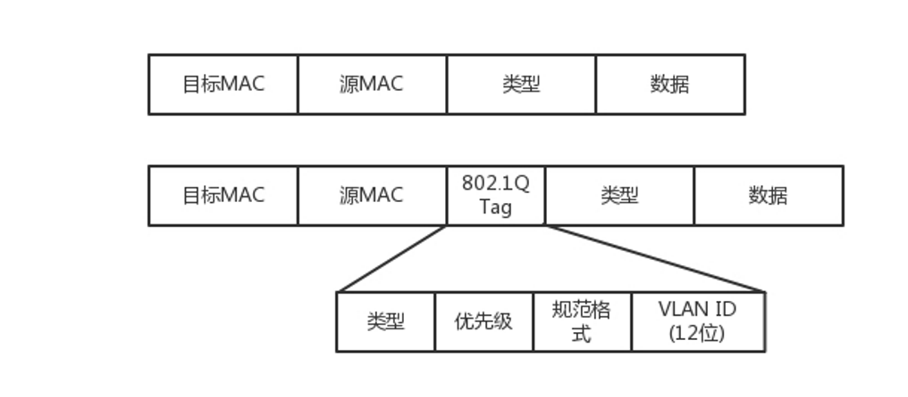
对于支持 VLAN 的交换机，交换机之间可以使用Trunk 口连接。它可以转发属于任何 VLAN 的口。
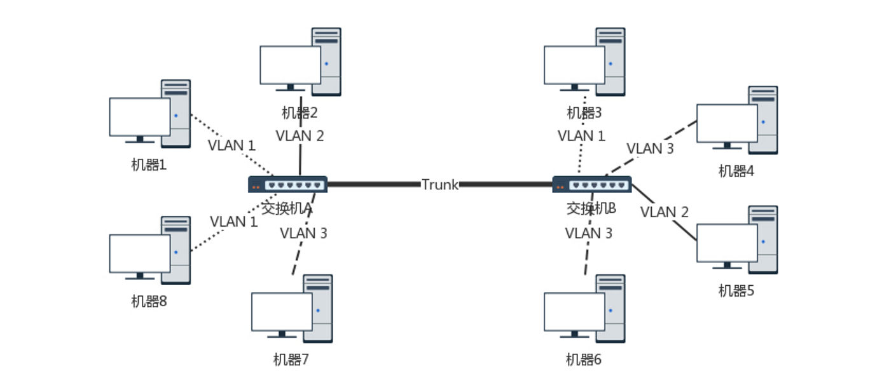
STP
概念：
- Root Bridge，根交换机。是某棵树的老大。
- Designated Bridges，指定交换机。就是一棵树的树枝。
- Bridge Protocol Data Units （BPDU） ，网桥协议数据单元。交换机相连的时候，就需要“相互比较实力”。BPDU 只有根交换机能发。
- Priority Vector，优先级向量。[Root Bridge ID, Root Path Cost, Bridge ID, and Port ID]。先看 Root Bridge ID，再比 Root Path Cost，也即距离老大的距离，最后比 Bridge ID，拿自己的本事比。
生成树协议运行生成树算法过程可以归纳为以下三个步骤：
- 选择根交换机
- 选择根端口
- 选择指定端口
移动网络
2G 网络
手机本来是用来打电话的而不是用来上网的，在 2G 时代上网使用的不是 IP 网络而是电话网络，走模拟信号，专业名称为公共交换电话网Public Switched Telephone Network（PSTN）
手机是通过收发无线信号来通信的，专业名称是 Mobile Station，简称 MS，需要嵌入 SIM。手机是客户端，而无线信号的服务端，就是基站子系统（BSS，Base Station SubsystemBSS）。至于什么是基站，你可以回想一下，你在爬山的时候，是不是看到过信号塔？我们平时城市里面的基站比较隐蔽，不容易看到，所以只有在山里才会注意到。正是这个信号塔，通过无线信号，让你的手机可以进行通信。
无论无线通信如何无线，最终还是要连接到有线的网络里。前面讲数据中心的时候我也讲过，电商的应用是放在数据中心的，数据中心的电脑都是插着网线的。
因而，基站子系统分两部分，一部分对外提供无线通信，叫作基站收发信台（BTS，Base Transceiver Station），另一部分对内连接有线网络，叫作基站控制器（BSC，Base Station Controller）。基站收发信台通过无线收到数据后，转发给基站控制器。
这部分属于无线的部分，统称为无线接入网（RAN，Radio Access Network）。
基站控制器通过有线网络，连接到提供手机业务的运营商的数据中心，这部分称为核心网（CN，Core Network）。核心网还没有真的进入互联网，这部分还是主要提供手机业务，是手机业务的有线部分。
首先接待基站来的数据的是移动业务交换中心（MSC，Mobile Service Switching Center），它是进入核心网的入口，但是它不会让你直接连接到互联网上。
因为在让你的手机真正进入互联网之前，提供手机业务的运营商，需要认证是不是合法的手机接入。别你自己造了一张手机卡，就连接上来。鉴权中心（AUC，Authentication Center）和设备识别寄存器（EIR，Equipment Identity Register）主要是负责安全性的。
另外，需要看你是本地的号，还是外地的号，这个牵扯到计费的问题，异地收费还是很贵的。访问位置寄存器（VLR，Visit Location Register）是看你目前在的地方，归属位置寄存器（HLR，Home Location Register）是看你的号码归属地。
当你的手机卡既合法又有钱的时候，才允许你上网，这个时候需要一个网关，连接核心网和真正的互联网。网关移动交换中心（GMSC ，Gateway Mobile Switching Center）就是干这个的，然后是真正的互连网。在 2G 时代，还是电话网络 PSTN。
数据中心里面的这些模块统称为网络子系统（NSS，Network and Switching Subsystem）。
2.5G 网络
后来从 2G 到了 2.5G，也即在原来电路交换的基础上，加入了分组交换业务，支持 Packet 的转发，从而支持 IP 网络。
在上述网络的基础上，基站一面朝前接无线，一面朝后接核心网。在朝后的组件中，多了一个分组控制单元（PCU，Packet Control Unit），用以提供分组交换通道。
在核心网里面，有个朝前的接待员（SGSN，Service GPRS Supported Node）和朝后连接 IP 网络的网关型 GPRS 支持节点（GGSN，Gateway GPRS Supported Node）。3G 网络
到了 3G 时代，主要是无线通信技术有了改进，大大增加了无线的带宽。
以 W-CDMA 为例，理论最高 2M 的下行速度，因而基站改变了，一面朝外的是 Node B，一面朝内连接核心网的是无线网络控制器（RNC，Radio Network Controller）。核心网以及连接的 IP 网络没有什么变化。
4G 网络
然后就到了今天的 4G 网络，基站为 eNodeB，包含了原来 Node B 和 RNC 的功能，下行速度向百兆级别迈进。另外，核心网实现了控制面和数据面的分离，这个怎么理解呢？
在前面的核心网里面，有接待员 MSC 或者 SGSN，你会发现检查是否合法是它负责，转发数据也是它负责，也即控制面和数据面是合二为一的，这样灵活性比较差，因为控制面主要是指令，多是小包，往往需要高的及时性；数据面主要是流量，多是大包，往往需要吞吐量。
于是有了下面这个架构。HSS 用于存储用户签约信息的数据库，其实就是你这个号码归属地是哪里的，以及一些认证信息。
MME 是核心控制网元，是控制面的核心，当手机通过 eNodeB 连上的时候，MME 会根据 HSS 的信息，判断你是否合法。如果允许连上来，MME 不负责具体的数据的流量，而是 MME 会选择数据面的 SGW 和 PGW，然后告诉 eNodeB，我允许你连上来了，你连接它们吧。
于是手机直接通过 eNodeB 连接 SGW，连上核心网，SGW 相当于数据面的接待员，并通过 PGW 连到 IP 网络。PGW 就是出口网关。在出口网关，有一个组件 PCRF，称为策略和计费控制单元，用来控制上网策略和流量的计费。
4G 网络协议解析
我们来仔细看一下 4G 网络的协议，真的非常复杂。我们将几个关键组件放大来看。
控制面协议
其中虚线部分是控制面的协议。当一个手机想上网的时候，先要连接 eNodeB，并通过 S1-MME 接口，请求 MME 对这个手机进行认证和鉴权。S1-MME 协议栈如下图所示。
UE 就是你的手机，eNodeB 还是两面派，朝前对接无线网络，朝后对接核心网络，在控制面对接的是 MME。
eNodeB 和 MME 之间的连接就是很正常的 IP 网络，但是这里面在 IP 层之上，却既不是 TCP，也不是 UDP，而是 SCTP。这也是传输层的协议，也是面向连接的，但是更加适合移动网络。 它继承了 TCP 较为完善的拥塞控制并改进 TCP 的一些不足之处。
SCTP 的第一个特点是多宿主。一台机器可以有多个网卡，而对于 TCP 连接来讲，虽然服务端可以监听 0.0.0.0，也就是从哪个网卡来的连接都能接受，但是一旦建立了连接，就建立了四元组，也就选定了某个网卡。
SCTP 引入了联合（association）的概念，将多个接口、多条路径放到一个联合中来。当检测到一条路径失效时，协议就会通过另外一条路径来发送通信数据。应用程序甚至都不必知道发生了故障、恢复，从而提供更高的可用性和可靠性。
SCTP 的第二个特点是将一个联合分成多个流。一个联合中的所有流都是独立的，但均与该联合相关。每个流都给定了一个流编号，它被编码到 SCTP 报文中，通过联合在网络上传送。在 TCP 的机制中，由于强制顺序，导致前一个不到达，后一个就得等待，SCTP 的多个流不会相互阻塞。
SCTP 的第三个特点是四次握手，防止 SYN 攻击。在 TCP 中是三次握手，当服务端收到客户的 SYN 之后，返回一个 SYN-ACK 之前，就建立数据结构，并记录下状态，等待客户端发送 ACK 的 ACK。当恶意客户端使用虚假的源地址来伪造大量 SYN 报文时，服务端需要分配大量的资源，最终耗尽资源，无法处理新的请求。
SCTP 可以通过四次握手引入 Cookie 的概念，来有效地防止这种攻击的产生。在 SCTP 中，客户机使用一个 INIT 报文发起一个连接。服务器使用一个 INIT-ACK 报文进行响应，其中就包括了 Cookie。然后客户端就使用一个 COOKIE-ECHO 报文进行响应，其中包含了服务器所发送的 Cookie。这个时候，服务器为这个连接分配资源，并通过向客户机发送一个 COOKIE-ACK 报文对其进行响应。
SCTP 的第四个特点是将消息分帧。TCP 是面向流的，也即发送的数据没头没尾，没有明显的界限。这对于发送数据没有问题，但是对于发送一个个消息类型的数据，就不太方便。有可能客户端写入 10 个字节，然后再写入 20 个字节。服务端不是读出 10 个字节的一个消息，再读出 20 个字节的一个消息，而有可能读入 25 个字节，再读入 5 个字节，需要业务层去组合成消息。
SCTP 借鉴了 UDP 的机制，在数据传输中提供了消息分帧功能。当一端对一个套接字执行写操作时，可确保对等端读出的数据大小与此相同。
SCTP 的第五个特点是断开连接是三次挥手。在 TCP 里面，断开连接是四次挥手，允许另一端处于半关闭的状态。SCTP 选择放弃这种状态，当一端关闭自己的套接字时，对等的两端全部需要关闭，将来任何一端都不允许再进行数据的移动了。
当 MME 通过认证鉴权，同意这个手机上网的时候，需要建立一个数据面的数据通路。建立通路的过程还是控制面的事情，因而使用的是控制面的协议 GTP-C。
建设的数据通路分两段路，其实是两个隧道。一段是从 eNodeB 到 SGW，这个数据通路由 MME 通过 S1-MME 协议告诉 eNodeB，它是隧道的一端，通过 S11 告诉 SGW，它是隧道的另一端。第二端是从 SGW 到 PGW，SGW 通过 S11 协议知道自己是其中一端，并主动通过 S5 协议，告诉 PGW 它是隧道的另一端。
GTP-C 协议是基于 UDP 的，这是UDP 的“城会玩”中的一个例子。如果看 GTP 头，我们可以看到，这里面有隧道的 ID，还有序列号。
通过序列号，不用 TCP，GTP-C 自己就可以实现可靠性，为每个输出信令消息分配一个依次递增的序列号，以确保信令消息的按序传递，并便于检测重复包。对于每个输出信令消息启动定时器，在定时器超时前未接收到响应消息则进行重发。
数据面协议
当两个隧道都打通，接在一起的时候，PGW 会给手机分配一个 IP 地址，这个 IP 地址是隧道内部的 IP 地址，可以类比为 IPsec 协议里面的 IP 地址。这个 IP 地址是归手机运营商管理的。然后，手机可以使用这个 IP 地址，连接 eNodeB，从 eNodeB 经过 S1-U 协议，通过第一段隧道到达 SGW，再从 SGW 经过 S8 协议，通过第二段隧道到达 PGW，然后通过 PGW 连接到互联网。
数据面的协议都是通过 GTP-U，如图所示。
手机每发出的一个包，都由 GTP-U 隧道协议封装起来，格式如下。
和 IPsec 协议很类似，分为乘客协议、隧道协议、承载协议。其中乘客协议是手机发出来的包，IP 是手机的 IP，隧道协议里面有隧道 ID，不同的手机上线会建立不同的隧道，因而需要隧道 ID 来标识。承载协议的 IP 地址是 SGW 和 PGW 的 IP 地址。
手机上网流程
接下来，我们来看一个手机开机之后上网的流程，这个过程称为Attach。可以看出来，移动网络还是很复杂的。因为这个过程要建立很多的隧道，分配很多的隧道 ID，所以我画了一个图来详细说明这个过程。
- 手机开机以后，在附近寻找基站 eNodeB，找到后给 eNodeB 发送 Attach Request，说“我来啦，我要上网”。
- eNodeB 将请求发给 MME，说“有个手机要上网”。
- MME 去请求手机，一是认证，二是鉴权，还会请求 HSS 看看有没有钱，看看是在哪里上网。
- 当 MME 通过了手机的认证之后，开始分配隧道，先告诉 SGW，说要创建一个会话（Create Session）。在这里面，会给 SGW 分配一个隧道 ID t1，并且请求 SGW 给自己也分配一个隧道 ID。
- SGW 转头向 PGW 请求建立一个会话，为 PGW 的控制面分配一个隧道 ID t2，也给 PGW 的数据面分配一个隧道 ID t3，并且请求 PGW 给自己的控制面和数据面分配隧道 ID。
- PGW 回复 SGW 说“创建会话成功”，使用自己的控制面隧道 ID t2，回复里面携带着给 SGW 控制面分配的隧道 ID t4 和控制面的隧道 ID t5，至此 SGW 和 PGW 直接的隧道建设完成。双方请求对方，都要带着对方给自己分配的隧道 ID，从而标志是这个手机的请求。
- 接下来 SGW 回复 MME 说“创建会话成功”，使用自己的隧道 ID t1 访问 MME，回复里面有给 MME 分配隧道 ID t6，也有 SGW 给 eNodeB 分配的隧道 ID t7。
- 当 MME 发现后面的隧道都建设成功之后，就告诉 eNodeB，“后面的隧道已经建设完毕，SGW 给你分配的隧道 ID 是 t7，你可以开始连上来了，但是你也要给 SGW 分配一个隧道 ID”。
- eNodeB 告诉 MME 自己给 SGW 分配一个隧道，ID 为 t8。
- MME 将 eNodeB 给 SGW 分配的隧道 ID t8 告知 SGW，从而前面的隧道也建设完毕。
这样，手机就可以通过建立的隧道成功上网了。
异地上网问题
接下来我们考虑异地上网的事情。
为什么要分 SGW 和 PGW 呢，一个 GW 不可以吗？SGW 是你本地的运营商的设备，而 PGW 是你所属的运营商的设备。
如果你在巴塞罗那，一下飞机，手机开机，周围搜寻到的肯定是巴塞罗那的 eNodeB。通过 MME 去查寻国内运营商的 HSS，看你是否合法，是否还有钱。如果允许上网，你的手机和巴塞罗那的 SGW 会建立一个隧道，然后巴塞罗那的 SGW 和国内运营商的 PGW 建立一个隧道，然后通过国内运营商的 PGW 上网。这样判断你是否能上网的在国内运营商的 HSS，控制你上网策略的是国内运营商的 PCRF，给手机分配的 IP 地址也是国内运营商的 PGW 负责的，给手机分配的 IP 地址也是国内运营商里统计的。运营商由于是在 PGW 里面统计的，这样你的上网流量全部通过国内运营商即可，只不过巴塞罗那运营商也要和国内运营商进行流量结算。
由于你的上网策略是由国内运营商在 PCRF 中控制的，因而你还是上不了脸书。
好了，这一节就到这里了，我们来总结一下：
- 移动网络的发展历程从 2G 到 3G，再到 4G，逐渐从打电话的功能为主，向上网的功能为主转变；
- 请记住 4G 网络的结构，有 eNodeB、MME、SGW、PGW 等，分控制面协议和数据面协议，你可以对照着结构，试着说出手机上网的流程；
- 即便你在国外的运营商下上网，也是要通过国内运营商控制的，因而也上不了脸书。
最后，给你留两个思考题：
- 咱们上网都有套餐，有交钱多的，有交钱少的，你知道移动网络是如何控制不同优先级的用户的上网流量的吗？
- 前面讲过的所有的网络都是基于物理机的，随着云计算兴起，无论是电商，还是移动网络都要部署在云中了，你知道云中网络的设计有哪些要点吗？
云计算
软件定义网络
容器
微服务
RPC
RPC（Remote Procedure Call），远程过程调用协议，是分布式系统常见的一种通信方法。
当两个物理分离的子系统需要建立逻辑上的关联时，RPC 是牵线搭桥的常见技术手段之一。
除 RPC 之外，常见的多系统数据交互方案还有分布式消息队列、HTTP 请求调用、数据库和分布式缓存等
早期 ONC RPC 框架
服务之间的互相调用，该怎么实现呢？
概述
Implementing remote procedure calls
定义了 RPC 的调用标准

其中 RPC 和 HTTP 调用是没有经过中间件的，它们是端到端系统的直接数据交互HTTP 调用其实也可以看成是一种特殊的 RPC，只不过传统意义上的 RPC 是指长连接数据交互，而 HTTP 一般是指即用即走的短链接。
RPC 在我们熟知的各种中间件中都有它的身影。Nginx/Redis/MySQL/Dubbo/Hadoop/Spark/Tensorflow 等重量级开源产品都是在 RPC 技术的基础上构建出来的，我们这里说的 RPC 指的是广义的 RPC，也就是分布式系统的通信技术。
安全
TCP/IP常见攻击
IP欺骗
通过IP地址我们能知道什么？
通过 IP 地址，我们就可以知道判断访问对象服务器的位置，通过这个 IP 地址就可以判断访问对象服务器的位置，从而将消息发送到服务器。一般发送者发出的消息首先经过子网的集线器，转发到最近的路由器，然后根据路由位置访问下一个路由器的位置，直到重点
IP欺骗技术
IP 欺骗技术就是伪造某台主机的 IP 地址的技术。通过IP 地址的伪装使得某台主机能够伪装另外的一台主机，而这台主机往往具有某种特权或者被另外的主机所信任。
假设现在有一个合法用户 (1.1.1.1) 已经同服务器建立正常的连接，攻击者构造攻击的 TCP 数据，伪装自己的 IP 为 1.1.1.1，并向服务器发送一个带有 RSI 位的 TCP 数据段。服务器接收到这样的数据后，认为从 1.1.1.1 发送的连接有错误，就会清空缓冲区中建立好的连接。
这时，如果合法用户 1.1.1.1 再发送合法数据，服务器就已经没有这样的连接了，该用户就必须从新开始建立连接。攻击时，伪造大量的IP地址，向目标发送 RST 数据，使服务器不对合法用户服务。虽然IP地址欺骗攻击有着相当难度，但我们应该清醒地意识到，这种攻击非常广泛，入侵往往从这种攻击开始。
SYN Flooding
SYN Flooding简介
拒绝服务攻击（DDoS）从1970 年出现直到今天都依然在作祟，并给全球范围内的各大组织带来了不可估量的损失。SYN Flood是互联网上最经典的DDoS攻击方式之一，最早出现于 1999 年左右，雅虎是当时最著名的受害者。SYN Flood攻击利用了 TCP 三次握手的缺陷，能够以较小代价使目标服务器无法响应，且难以追查。
SYN flood 是一种常见的 DOS（denial of service拒绝服务）和 DDos (distributed denial of serivce 分布式拒绝服务）攻击方式。这是一种使用TCP协议缺陷，发送大量的伪造的 TCP 连接请求，使得被攻击方 CPU 或内存资源耗尽，最终导致被攻击方无法提供正常的服务。
TCP SYN Flood攻击原理
TCP SYN Flood 攻击利用的是 TCP 的三次握手（SYN -> SYN/ACK -> ACK），假设连接发起方是A，连接接受方是 B，即 B 在某个端口（Port）上监听A发出的连接请求，过程如下图所示，左边是A，右边是B。

A 首先发送 SYN（Synchronization）消息给 B，要求 B 做好接收数据的准备；B 收到后反馈 SYN-ACK（Synchronization-Acknowledgement） 消息给A，这个消息的目的有两个：
- 向 A 确认已做好接收数据的准备，
- 同时要求 A 也做好接收数据的准备，此时 B 已向 A 确认好接收状态，并等待 A 的确认，连接处于半开状态（Half-Open），顾名思义只开了一半；A 收到后再次发送 ACK (Acknowledgement) 消息给B，向 B 确认也做好了接收数据的准备，至此三次握手完成，「连接」就建立了，
大家注意到没有，最关键的一点在于双方是否都按对方的要求进入了可以接收消息的状态。而这个状态的确认主要是双方将要使用的消息序号(SquenceNum)，TCP 为保证消息按发送顺序抵达接收方的上层应用，需要用消息序号来标记消息的发送先后顺序的。
TCP是「双工」(Duplex)连接，同时支持双向通信，也就是双方同时可向对方发送消息，其中 SYN 和 SYN-ACK 消息开启了A→B的单向通信通道（B 获知了 A 的消息序号）；SYN-ACK 和 ACK 消息开启了B→A单向通信通道（A获知了B的消息序号）。
上面讨论的是双方在诚实守信，正常情况下的通信。
但实际情况是，网络可能不稳定会丢包，使握手消息不能抵达对方，也可能是对方故意不按规矩来，故意延迟或不发送握手确认消息。
假设 B 通过某 TCP 端口提供服务，B 在收到 A 的 SYN 消息时，积极的反馈了 SYN-ACK 消息，使连接进入半开状态，因为 B 不确定自己发给 A 的 SYN-ACK 消息或 A 反馈的 ACK 消息是否会丢在半路，所以会给每个待完成的半开连接都设一个Timer，如果超过时间还没有收到 A 的 ACK 消息，则重新发送一次 SYN-ACK 消息给A，直到重试超过一定次数时才会放弃。
B 为帮助 A 能顺利连接，需要分配内核资源维护半开连接，那么当 B 面临海量的连接 A 时，如上图所示，SYN Flood 攻击就形成了。攻击方 A 可以控制肉鸡向 B 发送大量 SYN 消息但不响应 ACK 消息，或者干脆伪造 SYN 消息中的 Source IP，使 B 反馈的 SYN-ACK 消息石沉大海，导致 B 被大量注定不能完成的半开连接占据，直到资源耗尽，停止响应正常的连接请求。
UDP Flooding
UDP 洪泛是也是一种拒绝服务攻击，将大量的用户数据报协议（UDP）数据包发送到目标服务器，目的是压倒该设备的处理和响应能力。防火墙保护目标服务器也可能因 UDP 泛滥而耗尽，从而导致对合法流量的拒绝服务。
UDP Flood攻击如何工作？
UDP Flood 主要通过利用服务器响应发送到其中一个端口的 UDP 数据包所采取的步骤。在正常情况下，当服务器在特定端口接收到 UDP 数据包时，会经过两个步骤：
- 服务器首先检查是否正在运行正在侦听指定端口的请求的程序。
- 如果没有程序在该端口接收数据包，则服务器使用 ICMP（ping）数据包进行响应，以通知发送方目的地不可达。
举个例子。假设今天要联系酒店的小蓝，酒店客服接到电话后先查看房间的列表来确保小蓝在客房内，随后转接给小蓝。
首先，接待员接收到呼叫者要求连接到特定房间的电话。接待员然后需要查看所有房间的清单，以确保客人在房间中可用，并愿意接听电话。碰巧的是，此时如果突然间所有的电话线同时亮起来，那么他们就会很快就变得不堪重负了。
当服务器接收到每个新的 UDP 数据包时，它将通过步骤来处理请求，并利用该过程中的服务器资源。发送 UDP 报文时，每个报文将包含源设备的 IP 地址。在这种类型的 DDoS 攻击期间，攻击者通常不会使用自己的真实 IP 地址，而是会欺骗 UDP 数据包的源 IP 地址，从而阻止攻击者的真实位置被暴露并潜在地饱和来自目标的响应数据包服务器。
由于目标服务器利用资源检查并响应每个接收到的 UDP 数据包的结果，当接收到大量 UDP 数据包时，目标的资源可能会迅速耗尽，导致对正常流量的拒绝服务。
.png)
如何缓解UDP洪水攻击？
大多数操作系统部分限制了 ICMP 报文的响应速率，以中断需要 ICMP 响应的 DDoS 攻击。这种缓解的一个缺点是在攻击过程中，合法的数据包也可能被过滤。如果 UDP Flood 的容量足够高以使目标服务器的防火墙的状态表饱和，则在服务器级别发生的任何缓解都将不足以应对目标设备上游的瓶颈。
4 TCP 重置攻击
在 TCP 重置攻击中，攻击者通过向通信的一方或双方发送伪造的消息，告诉它们立即断开连接，从而使通信双方连接中断。正常情况下，如果客户端收发现到达的报文段对于相关连接而言是不正确的，TCP 就会发送一个重置报文段，从而导致 TCP 连接的快速拆卸。
TCP 重置攻击利用这一机制，通过向通信方发送伪造的重置报文段，欺骗通信双方提前关闭 TCP 连接。如果伪造的重置报文段完全逼真，接收者就会认为它有效，并关闭 TCP 连接，防止连接被用来进一步交换信息。服务端可以创建一个新的 TCP 连接来恢复通信，但仍然可能会被攻击者重置连接。万幸的是，攻击者需要一定的时间来组装和发送伪造的报文，所以一般情况下这种攻击只对长连接有杀伤力，对于短连接而言，你还没攻击呢，人家已经完成了信息交换。
从某种意义上来说，伪造 TCP 报文段是很容易的，因为 TCP/IP 都没有任何内置的方法来验证服务端的身份。有些特殊的 IP 扩展协议（例如 IPSec）确实可以验证身份，但并没有被广泛使用。客户端只能接收报文段，并在可能的情况下使用更高级别的协议（如 TLS）来验证服务端的身份。但这个方法对 TCP 重置包并不适用，因为 TCP 重置包是 TCP 协议本身的一部分，无法使用更高级别的协议进行验证。
5. 模拟攻击
以下实验是在
OSX系统中完成的，其他系统请自行测试。
现在来总结一下伪造一个 TCP 重置报文要做哪些事情：
- 嗅探通信双方的交换信息。
- 截获一个
ACK标志位置位 1 的报文段，并读取其ACK号。 - 伪造一个 TCP 重置报文段（
RST标志位置为 1），其序列号等于上面截获的报文的ACK号。这只是理想情况下的方案，假设信息交换的速度不是很快。大多数情况下为了增加成功率，可以连续发送序列号不同的重置报文。 - 将伪造的重置报文发送给通信的一方或双方，时其中断连接。
为了实验简单，我们可以使用本地计算机通过 localhost 与自己通信，然后对自己进行 TCP 重置攻击。需要以下几个步骤：
- 在两个终端之间建立一个 TCP 连接。
- 编写一个能嗅探通信双方数据的攻击程序。
- 修改攻击程序，伪造并发送重置报文。
下面正式开始实验。
建立 TCP 连接
可以使用 netcat 工具来建立 TCP 连接，这个工很多操作系统都预装了。打开第一个终端窗口，运行以下命令：
$ nc -nvl 8000这个命令会启动一个 TCP 服务，监听端口为 8000。接着再打开第二个终端窗口，运行以下命令：
$ nc 127.0.0.1 8000该命令会尝试与上面的服务建立连接，在其中一个窗口输入一些字符，就会通过 TCP 连接发送给另一个窗口并打印出来。
问题和解答
可以通过路由表得到下一个路由器的 IP 地址，直接通过 IP 地址找就可以了，为什么还要通过本地的 MAC 地址呢？
在网络包里，有源 IP 地址和目标 IP 地址、源 MAC 地址和目标 MAC 地址。从路由表中取得下一跳的 IP 地址后，应该把这个地址放在哪里呢？如果放在目标 IP 地址里面，谁知道最终的目标在哪里呢？所以要用 MAC 地址。
所谓的下一跳，看起来是 IP 地址，其实是要通过 ARP 得到 MAC 地址，将下一跳的 MAC 地址放在目标 MAC 地址里面。
MAC 地址可以修改吗？
MAC地址（Media Access Control，介质访问控制），也叫硬件地址，长度是 48 比特（6 字节），由 16 进制的数字组成，分为前 24 位和后 24 位。
前 24 位叫作组织唯一标志符（Organizationally Unique Identifier，OUI），是由 IEEE 的注册管理机构给不同厂家分配的代码，用于区分不同的厂家。后 24 位是厂家自己分配的，称为扩展标识符。同一个厂家生产的网卡中 MAC 地址后 24 位是不同的。
MAC 本来设计为唯一性的，但是后来设备越来越多，而且还有虚拟化的设备和网卡，有很多工具可以修改，就很难保证不冲突了。但是至少应该保持一个局域网内是唯一的。
MAC 的设计，使得即便不能保证绝对唯一，但是能保证一个局域网内出现冲突的概率很小。这样，一台机器启动的时候，就能够在没有 IP 地址的情况下，先用 MAC 地址进行通信，获得 IP 地址。
好在 MAC 地址是工作在一个局域网中的，因而即便出现了冲突，网络工程师也能够在自己的范围内很快定位并解决这个问题。
TCP 重试有没有可能导致重复下单？
不会的。因为 TCP 层收到了重复包之后，TCP 层自己会进行去重，发给应用层、HTTP 层。还是一个唯一的下单请求，所以不会重复下单。
那什么时候会导致重复下单呢？因为网络原因或者服务端错误，导致 TCP 连接断了，这样会重新发送应用层的请求，也即 HTTP 的请求会重新发送一遍。
如果服务端设计的是无状态的，它记不住上一次已经发送了一次请求。如果处理不好，就会导致重复下单，这就需要服务端除了实现无状态，还需要根据传过来的订单号实现幂等，同一个订单只处理一次。
还会有的现象是请求被黑客拦截，发送多次，这在 HTTPS 层可以有很多种机制，例如通过 Timestamp 和 Nonce 随机数联合起来，然后做一个不可逆的签名来保证。
参考
- 网络协议
- Web协议详解与抓包实战
- 理解 RESTful 架构